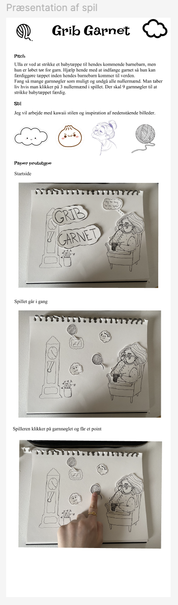
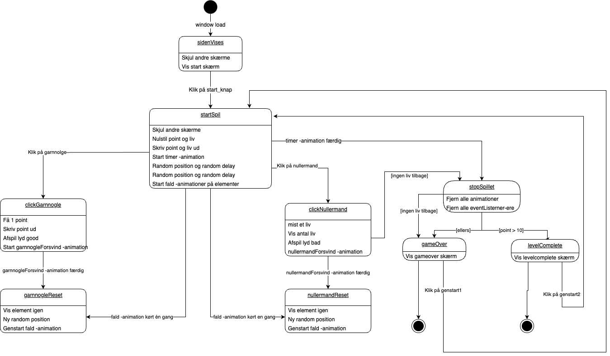
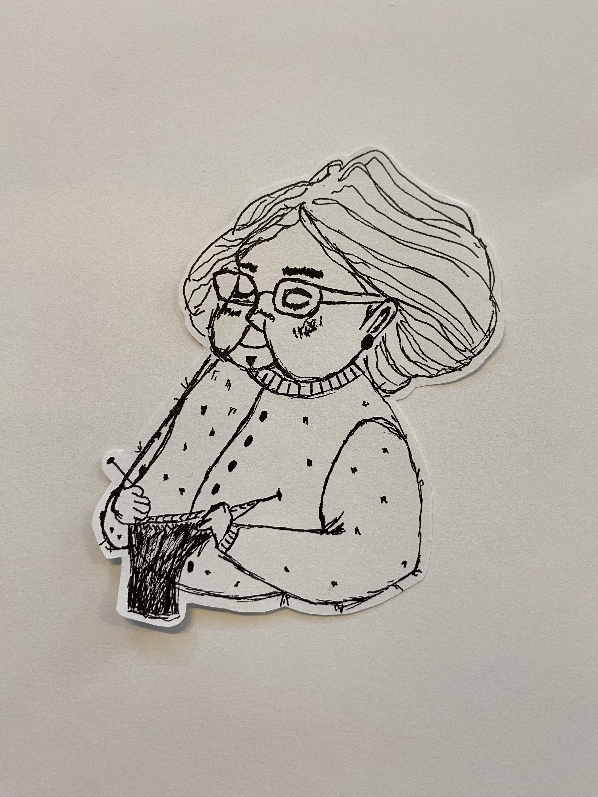

Grundlæggende animation
I tema 4, grundlæggende animation, havde jeg til opgave at skabe et interaktiv spil samt tilhørende website. Her blev jeg introduceret til programmeringssproget JavaScript. Derudover havde jeg undervisning i at udvikle et designkoncept samt at tegne vektorgrafik i Adobe Illustrator
Proces, løsning og resultater
Ide / konceptudvikling
Jeg indledte temaet med ide og konceptudvikling, hvor jeg her brainstormede på det gode samt det dårlige spil. I den forbindelse lavede jeg et pitch på min spil ide som vi delte med to medstudende, som gav feedback.
På baggrund af disse nye insigter blev jeg introduceret til aktivitetsdiagrammer og state machine diagrammer som ses nedenfor.
Udvikling af design
Herefter begyndte jeg på design af UI og spil-elementer. Her fik jeg kendskab til Adobe Illustrator, hvor jeg lærte at tegne vektorgrafik. Derudover fik jeg viden om atmosfærisk perspektil til at skabe dybe, kompositoriske principper som brug af linjer, kontraster, focal point og rule of thrid.
Her ses min proces med udviklingen af min hovedkarakter og spilelementer. Fra min første skitse til min endelige karakter.
Implementering
Efter jeg havde tegnet alle vores elementer i Adobe Illustrator gik jeg videre med implementering af dem i vores spil. Her blev jeg introduceret til CSS animation og JavaScript. Her lærte jeg blandt andet at bruge kommandoerne metoderne addClass / removeClass, variabler, events herunder load, click, animationend. Nedenfor ses et udklip af min kodet spilside samt JavaScript.
Check ud